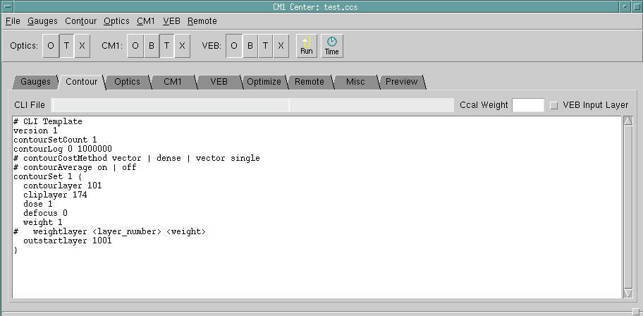

Follow this optional
procedure to include contour calibration files from Calibre ContourCal
into CM1 Center.
The Calibre ContourCal tool is a set of functionality
available through Calibre WORKbench that allows you to calibrate
a resist model using vendor-supplied SEM contours. The procedures
for use of Calibre ContourCal are described in detail in the appendix “Importing Contour Calibration Files”.
Contour calibration support is implemented
in CM1 Center via the Contour tab, which
allows you to both view the loaded contour layer information (CLI)
file as well as set the weight for the contour file.
Prerequisites
A
CLI file developed as described in the section “Importing Contour Calibration Files”.
The
layout file containing the layout design shapes and corresponding contours.
In
the same layout file, one or more layers consisting of regions where simulation
is to be performed (referred to as a “clip layer”). At least one
clip layer must be included to enclose the test structure.
Procedure
- Perform the steps to create
a CLI file if you have not already done so, up to, but not including
the running of the sparse OPC modelflow tool (CM1 Center uses the
modelflow_v2 command instead).
- Load the layout with the clip
information into Calibre WORKbench.
- In CM1 Center, switch to the Contour tab.
Figure 1. Contour Calibration Tab
- Load the
CLI file by using the menu
item.
Tip You can
use the built-in editor in the Contour tab
to modify an example template ( menu
item). This template is provided as a reference and does not have
any function ‘as is’, since all the lines are commented out.
- Assign a weight in the Ccal
Weight field, using a floating point value between 1 (equal weight
with gauge information) and 0 (inactive, no weight) to the contour
calibration data.
- If you are supplying this
as a VEB file, select the VEB Layer checkbox.
- When you run CM1 calibration
(as described in the section “Performing Fine CM1 Calibration”), the contour calibration information
is automatically included. The contour fitting information can be viewed
in the analysis log (as described in the section “Examining the CM1 Model for Quality”).